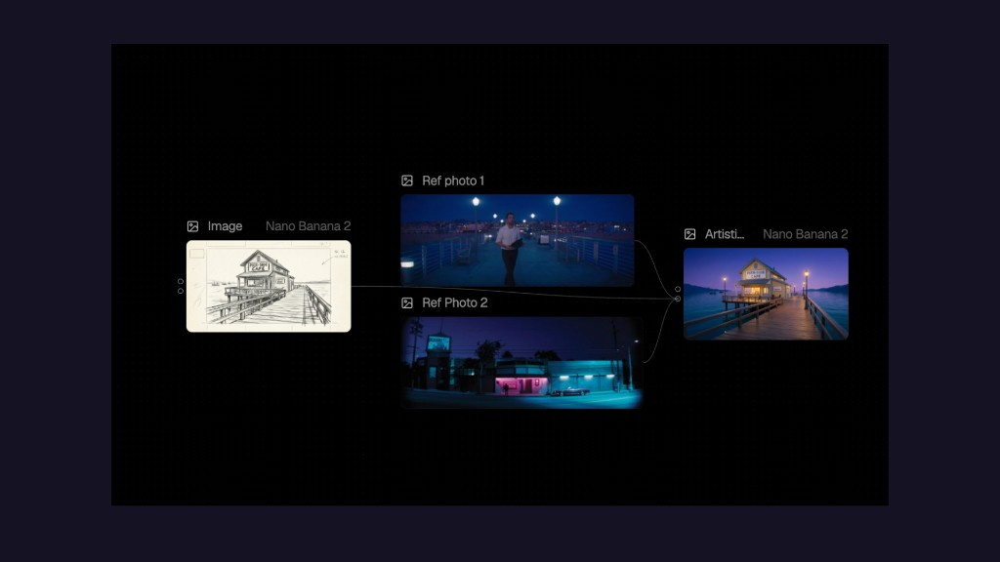

AI Workflow for Visual Storytelling

An AI-native workflow for applying cinematic style transfer to storyboard sketches and production assets. Built using node-based generative pipelines, the system takes a line drawing as input and uses reference photographs to synthesize a fully rendered, stylistically coherent image—translating visual mood, lighting, and color from real-world cinematography onto conceptual artwork.
The workflow was developed as a production tool for visual storytelling, enabling rapid iteration between concept art and photorealistic output. By feeding multiple reference images into the pipeline, the system blends stylistic qualities—extracting atmospheric lighting, color grading, and textural depth—and applies them to source sketches in a single pass.
This project sits at the intersection of creative production and AI systems design, exploring how generative tools can accelerate the visual development process without replacing the artist's intent.